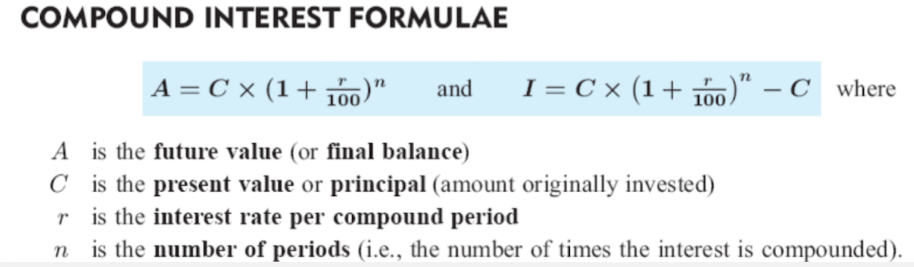
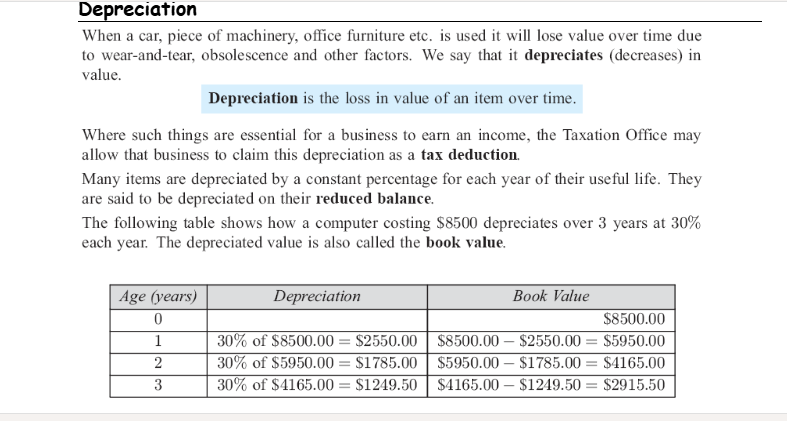
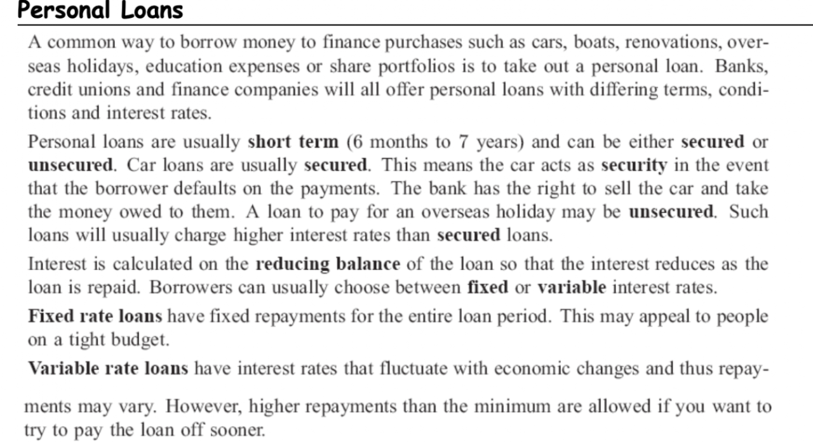
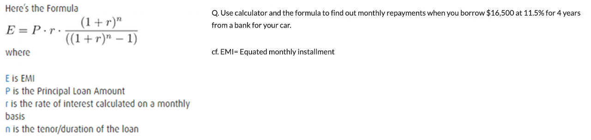
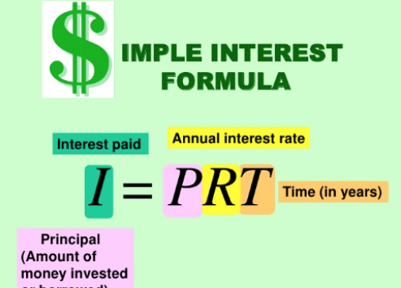
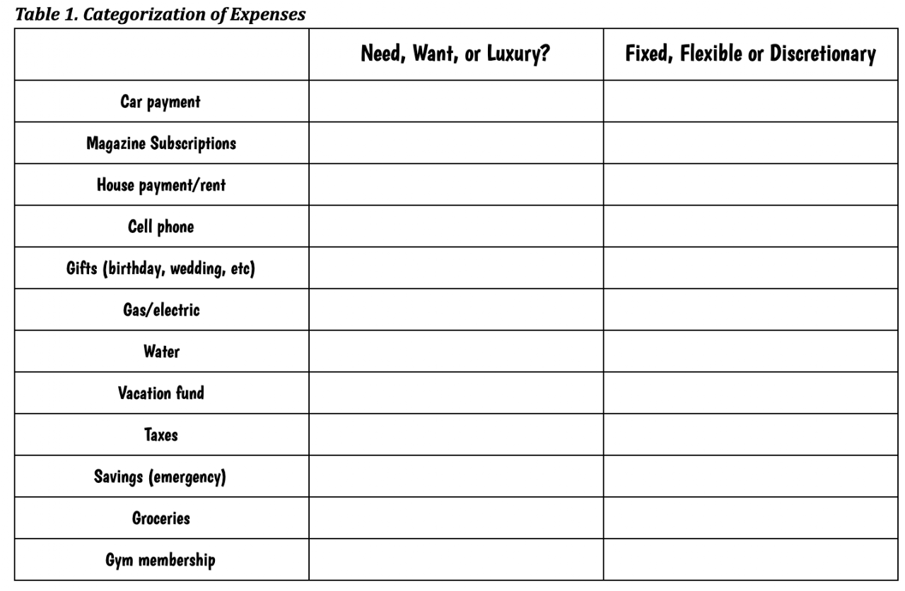
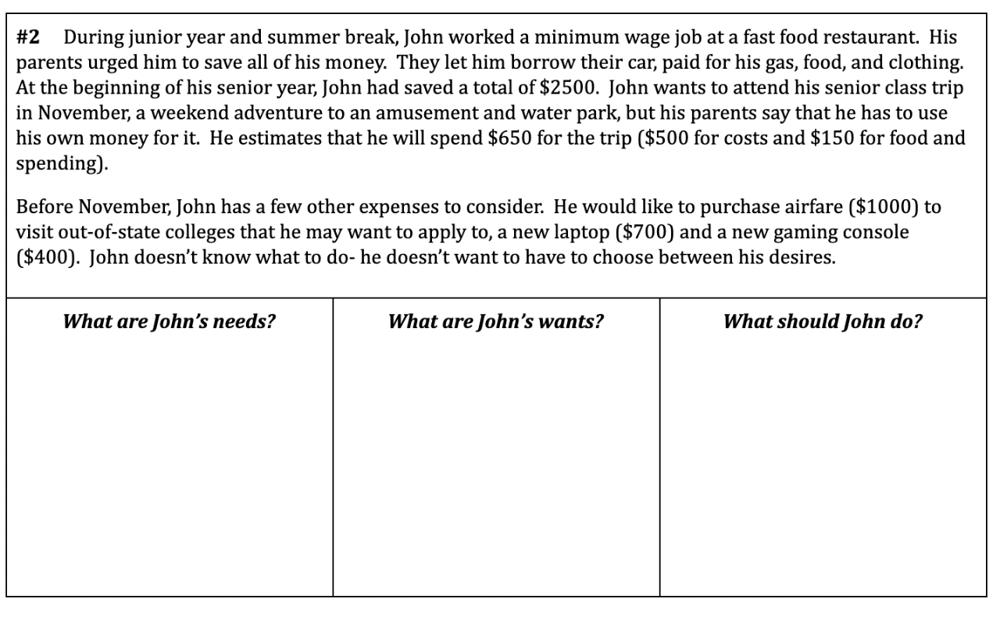

Contents
- Compound Interest
- Depreciation
- Personal Loan (Monthly Payments, & TVM Calculator)
- Income
- Income Calculation
- Deductions & Net Pay
- Savings Accounts & Interest Applications
- Budgeting
- Credit
Unit6- Preview and Vocabulary (Feb. 3rd, 2027)
Class Activity:
Use the internet, and find the definition or meanings of the following words in the google word document.
- Salary:
- Pay periods (biweekly, semimonthly, annual):
- Gross pay:
- Hourly pay:
- Overtime pay:
- Timecard:
Lesson 1- Compound Interest (Feb. 4th, 2027)
Goal: Students can use exponential functions to model change in a financial situation. (AMDM. PAR. 8.1)

Copy the followings with compound interest formula.
Compound Interest is a method of calculating interest in which the interest is added to the principle each period so that the principle continues to grow throughout the life of the loa or investment (unlike simple interest where the principal remains constant throughout the period of the loan or investment).
Thus, the interest generated in one period then earns interest itself in the next period.
Different Compounding Periods
Interest can be compounded more than once per year.
Commonly, interest can be compounded;
- half-yearly (two times per year)
- quarterly (four times per year)
- monthly (12 times per year)
- daily (365 or 366 times per year)
1) Calculate the final balance of a $10,000 at a 6% compound interest rate annually for 12 years. (Use the formula below)
Lesson 2- Depreciation (Feb. 5th, 2027)
Goal: Students can calculate the loss of an item in value over time just as compound interest. (AMDM. PAR. 8.1)
Warm-up
Calculate the final balance of a $10,000 at a 6% p.a.(per year), compounded half yearly for 12 years (Use the formula above)
Copy the following into your notebook

[Document: L8- Depreciation good — owner to add sharing link]
Lesson 2-1- Depreciation (Feb. 8th, 2027)
Goal: Students can calculate the loss of an item in value over time just as compound interest. (AMDM. PAR. 8.1)
Class Activity:
Use the internet, and find the definition or meanings of the following words in the google word document.
- Commission:
- Piecewise pay:
- Effective hourly rate:
- Deductions:
- Benefits:
Class work:
- Watch the video of Calculating Depreciation and take notes.
Lesson 3- Personal Loan (Monthly Payments, & TVM Calculator) (Feb. 9th, 2027)
Goal: Students can determine monthly repayment, total repayment, and interest charged. (AMDM. PAR. 8.2)
Warm-up;
Ever worry about being ripped off at a car dealership? Are you sure the finance office is calculating your payment correctly or did they add something without your knowledge?
Look below and copy into your notebook.


Q. On your own, determine the monthly payment for a used car and lets say you need to borrow just $7,500 from the bank with an annual percentage rate (APR) of 9.5% (Used car loan rates are always higher!). Usually, the longest you can have a loan on a used car is 4 years. So, let's say we will pay the loan off over a term of 4 years and make payments on a monthly basis.
Use the TVM calculator: TVM calculator
Class Activity:
Write a paragraph on this topic, Personal Loan.
Lesson 4- Income
Lesson 5- Income Calculation
Lesson 6- Deduction & Net Pay
Class Activity:
Use the internet, and find the definition or meanings of the following words in the google word document.
- Taxes:,
- Social security:,
- Medicare:,
- FICA:,
- Tax bracket:
- Net Pay:
Classwork.
Lesson 7- Savings Accounts & Interest Applications
Goal: Students can calculate simple interest and compare it with compound interest.
Today, we will begin the math project for the final exam. If you have met all attendance requirements, tardies, and have a minimum grade of 80, you are exempt from the math project.
Let me know if you have any questions.
Warm-up
Remember, checking account are for your "everyday" money.
Example 1: Allison currently has a balance of $2,300 in her checking account.
She deposits a $425.33 paycheck, a $20 rebate check, and a personal check for $550.
She wants to receive $200 cash back when she makes her deposit.
How much will she have in her checking account after the transaction?
A savings account is designed for you to save your money for future use. The use could be a few months away or years away.
______________________ is money that you earn for having money in a savings account. The more you have in your savings account, the more you earn.
Why would the bank pay you to have money in a savings account?
- The bank provides _________________ to its customers, it uses the money in people's savings accounts to loan to other people. Don't worry, at anytime you can ask for all of your money.
The bank basically pays you for letting them use your money.
- How to calculate Interest
- Compound Interest application is already explained in lesson 1.
- Simple Interest Calculation
- I = PRT
- I: Interest paid
- P: Principal (Amount of money invested)
- R: Annual Interest Rate
- T: Time (in years)
Ex: David deposited $800 in a savings account. The account pays an annual interest rate of 5.5%. He made no other deposits or withdrawals. After 3 months, what was the interest?

Class Activity:
Use the internet, and find the definition or meanings of the following words in the google word document.
- Entry-level position:
- Employment application:,
- Checking account:,
- Savings account:,
- Compound interest:,
- Monthly payment:,
- Future value:,
- Present value:,
- TVM calculator:
Classwork: Lesson 8- Budgeting
Goal: Students can plan a household budget, knowing "fixed costs, flexible expense and discretionary expense".
The most common expenses in a household budget are rental/mortgage payments, insurance payments, transportation, utility bills, food, entertainment, and taxes. Some expenses are "fixed costs" that do not change from month-to-month. In a personal budget as in a business, monies to cover fixed costs are set aside first. That leaves remaining income to be devoted to "flexible expenses" or "discretionary expenses." There may be overlap in these two categories. When an expense is a flexible expense, unlike fixed, it can vary from month-to-month and a consumer can have some control over the total amount spent. Still, like fixed expenses, flexible expenses are generally considered to be necessities. "Discretionary expenses" include those over which consumers have the most discretion in their budgets. Complete Table 1 by placing the expenses into a category or categories. Then think of one or two types of new expenses and place them into a category.


Lesson 9- Credit
Goal: Students can understand Credit and its scores
Contents borrowed from these websites:
1. Credit
Credit is the ability to borrow money or access goods or services with the understanding that you'll pay later.
Lenders, merchants and service providers (known collectively as creditors) grant credit based on their confidence you can be trusted to pay back what you borrowed, along with any finance charges that may apply.
To the extent that creditors consider you worthy of their trust, you are said to be creditworthy, or to have "good credit."
How Credit Works
In centuries past, creditors might have gauged your creditworthiness by reputation alone. Obviously, this method was subjective and prone to error, manipulation and bias. These days, creditors prefer a more objective approach. In the U.S., typically they look to your credit history—your record of borrowing and repaying funds—as a first step in determining whether to issue you credit.
Your credit history is summarized in files known as credit reports, compiled by three independent credit bureaus—Experian, TransUnion and Equifax. Banks, credit unions, credit card issuers and other creditors voluntarily report your borrowing and repayment information to the credit bureaus.
Information in your credit report includes:
- The number of credit card accounts you have, their borrowing limits and current outstanding balances
- The amounts of any loans you've taken out and how much of them you've paid back
- Whether your monthly payments for your accounts were made on time, late or missed altogether
- More severe financial setbacks such as mortgage foreclosures, car repossessions and bankruptcies
To help narrow their lending decisions, creditors often use a three-digit number known as a credit score as the first step in deciding whether or not to issue credit. Your credit score distills the information on your credit reports to something that's easy to interpret, and does so in a fair way that minimizes the possibility of bias.
Sophisticated systems known as credit scoring models calculate your credit score by performing complex statistical analysis on the contents of your credit file. Different models, such as the FICO® Score ☉ and VantageScore®, calculate scores differently, but all assign higher scores to individuals whose credit histories make them statistically more creditworthy than those with lower scores.
What Are the Types of Credit?
There are four types of credit:
- Revolving credit: With revolving credit, you are given a maximum borrowing limit, and you can make charges up to that limit. You must make a minimum payment each month, but otherwise the amount you pay can be any portion of your outstanding charges, up to the full amount. If you make a partial payment, you will carry forward the remainder of your balance, or revolve the debt. Most credit cards count as revolving credit.
- Charge cards: Once commonly issued by retailers for use exclusively in their establishment, charge cards are relatively rare these days. Charge cards are used in much the same way as credit cards, but they don't permit you to carry a balance: You must pay all charges in full every month.
- Service credit: Your contracts with service providers such as gas and electric utilities, cable and internet providers; cellular phone companies; and gyms are all credit agreements: These companies provide their services to you each month with the understanding that you will pay for them after the fact. Modern credit scoring systems, including the most recent versions of the FICO® Score and VantageScore, can factor your service payment history into your credit scores, but those payments are not always reported to the credit bureaus. The Experian Boost™ program enables you to share utility and cellphone payment records so they can be considered in credit scores based on Experian data.
- Installment credit: Installment credit is a loan for a specific sum of money you agree to repay, plus interest and fees, in a series of equal monthly payments (installments) over a set period of time. Student loans, car loans and mortgages are all examples of installment credit.
Why Do You Need Credit?
Good credit is necessary if you plan to borrow money for major purchases, such as a car or a home. Or maybe you want to take advantage of the convenience and purchase-protection a credit card can provide.
A higher credit score can mean better interest rates and terms on loans and credit cards. Many card issuers also reserve their most enticing rewards cards for customers with great credit.
Lenders aren't the only ones who concern themselves with your credit reports and credit scores:
- Landlords may check your credit when deciding if they'll rent you an apartment or determining how large a security deposit to require.
- Insurance companies may use your credit scores as factors in determining your rates.
- Utility companies may check your credit before deciding to let you open an account or borrow equipment.
- Prospective employers may use information found in credit reports to make a hiring decision.
- Your credit report can even be used to verify your identity, and for other purposes defined by federal law.
Credit is a tool that can help you buy things you need now and pay for them over time. Establishing and building up good credit over time is an important element of sound financial health.
2. Credit Score
So, What is a Credit Score?
Credit scores are created by taking information from credit reports and analyzing that data to forecast how someone is likely to behave in the future. By looking at factors like how much debt consumers carry, and whether they have paid their bills on time in the past, for example, they help predict whether someone might pay a new bill on time or how they will handle a credit line increase.
Who Creates Credit Scores?
Keep in mind there is no "one" credit score. It is important to know that you do not have just "one" credit score and there are many credit scores available to you as well as to lenders. Any credit score depends on the data used to calculate it, and may differ depending on the scoring model, the source of your credit history, the type of loan product, and even the day when it was calculated.
Most credit scores used by lenders and insurance companies today are created by FICO or VantageScore using credit information from the three major credit reporting agencies – Equifax, Experian and TransUnion.
Why Do I Have More Than One Score?
It's important not to get too hung up on a single number because, in fact, there are dozens of different credit scores that could be created right now using information from your credit reports.
One reason for this is that the credit reporting agencies each collect and report information independently and they may not have the same credit information about you. For example, a collection account may show up on one credit report and not another.
Another reason your scores can be different is that there are many different credit scores available. Some are used to predict different things; credit-based insurance scores, for example, are used to predict how likely consumers are to file insurance claims, and so they may differ from scores used to predict how someone will manage a higher credit card limit.
In addition, lenders might customize scores to help them better manage their own accounts. That means that even a FICO score based on Experian credit report information, for example, could vary from one lender to the next.
Finally, some scores are "educational" scores and they have been created strictly to educate consumers about their credit.
What is a Good Credit Score?
It depends! Each lender decides how to use these numbers. But here are some basic guidelines: 760 – 850: Excellent
700 – 749: Average – very good
650 – 699: Fair
600 – 649: Poor
Below 599: Bad
Some factors that make up a typical credit score include:
- Your bill-paying history
- Your current unpaid debt
- The number and type of loan accounts you have
- How long you have had your loan accounts open
- How much of your available credit you are using
- New applications for credit
- Whether you have had a debt sent to collection, a foreclosure, or a bankruptcy, and how long ago
Does Checking My Credit (Or Scores) Hurt My Credit?
No. If you check your credit through a service that provides credit reports to consumers – including your free annual credit report or your free credit score through Credit.com – it will not affect your credit score in any way. You can check as often as you like with no negative repercussions. The only time checking your report would hurt your scores is if you ask a lender to pull your report for you; for example, you ask your bank or an auto dealer to get your report and show it to you. Credit checks by lenders can affect your scores.
How Fast Do My Credit Scores Change?
Scores are calculated when they are created based on the information available at that time. So if new information is reported that significantly affects your score, such as a collection account that is reported for the first time, then the next time your score is requested by a lender – or by you – your score will be based on that new information.
Similarly, if you dispute something on your credit report that's having a big impact on your scores and that item is removed – that collection account for example! – your scores can change significantly next time they are calculated.